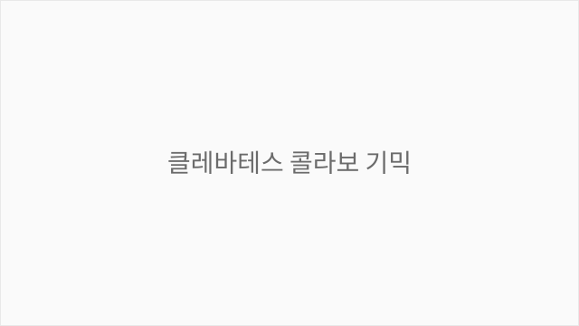

클레바테스 콜라보 기믹
그림자 분신 퍼즐 & 텔레포트
클레바테스 콜라보는 콩스튜디오의 게임에 추가된 기한정 보스 던전 기믹입니다. 플레이어가 자신의 그림자 분신과 위치를 교환하여 퍼즐을 풀고, 텔레포트 연출을 통해 신비로운 전투 경험을 제공합니다.
이 기믹은 단순한 게임플레이를 넘어 시각적·청각적 연출의 동기화가 중요했던 프로젝트입니다. 여러 비동기 요소(카메라 이동, 스케일 변화, 캐릭터 틴트)를 정확히 조정하면서도 기획자가 쉽게 파라미터를 조절할 수 있는 유연한 구조를 설계해야 했습니다.
스포너(Spawner)와 그림자 분신 객체의 생애 주기(대기, 캐스팅, 스폰, 밀림 등)를 상태 머신 패턴으로 설계하여 결합도를 낮추고 로직 확장을 용이하게 함.
상태 머신을 통해 각 상태에서의 동작이 명확히 분리되어 새로운 상태나 전이 규칙 추가 시 기존 코드 수정을 최소화했습니다. 이는 향후 기믹 변경이나 새 기능 추가 시 개발 속도 향상으로 이어졌습니다.
기믹의 일차별 스폰 개수, 지속 시간 등의 핵심 기획 변수를 Lua 데이터 파일로 분리하여 기획자 친화적인 밸런싱 환경 구축.
코드 수정 없이 Lua 파일만 변경하여 게임 밸런싱을 빠르게 반복할 수 있게 되어, 기획-프로그래밍 사이의 피드백 루프가 매우 단축되었습니다.
C# 메시지 시스템을 활용해 이벤트를 구독/해제(Subscribe/Unsubscribe)하는 방식으로 설계하고, 객체 해제 시 누수(Leak)가 발생하지 않도록 메모리를 안전하게 관리함.
느슨한 결합으로 인해 각 객체가 독립적으로 동작하면서도 필요한 이벤트만 수신하도록 설계했습니다. 반복 생성/삭제되는 기믹 특성상 메모리 관리가 매우 중요했는데, 이벤트 해제 누락으로 인한 메모리 누수를 완벽히 방지했습니다.
플레이어와 그림자의 위치 전환 시 카메라 이동, 스케일 변화, 캐릭터 틴트 효과 등을 코루틴으로 0.6초 내에 오차 없이 동기화하여 자연스러운 텔레포트 연출 구현.
여러 애니메이션을 정확한 타이밍에 동시에 실행하면서도 프레임 드랍이 발생하지 않도록 최적화했습니다. 시각적 만족도가 높은 연출의 기반이 되었으며, 플레이어의 게임 몰입도에 직접적인 영향을 미쳤습니다.
